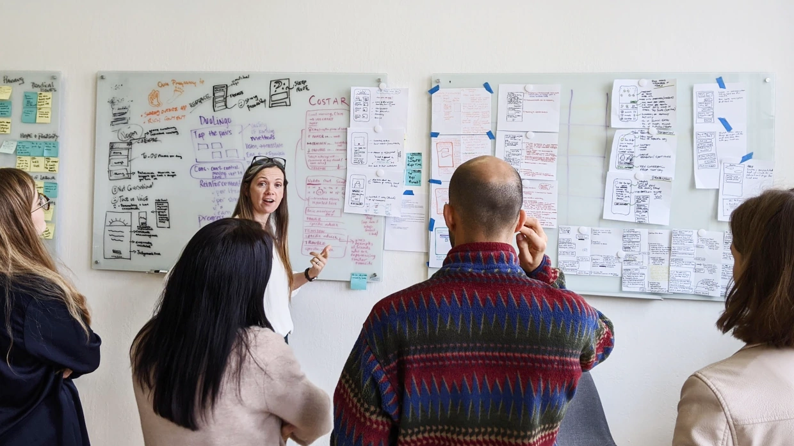
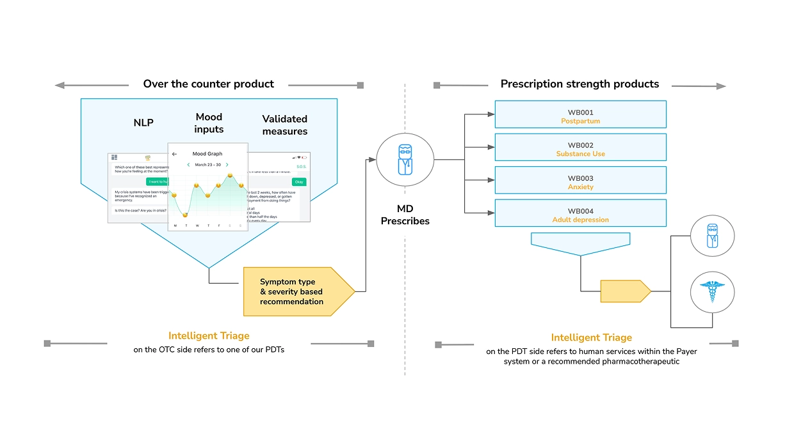
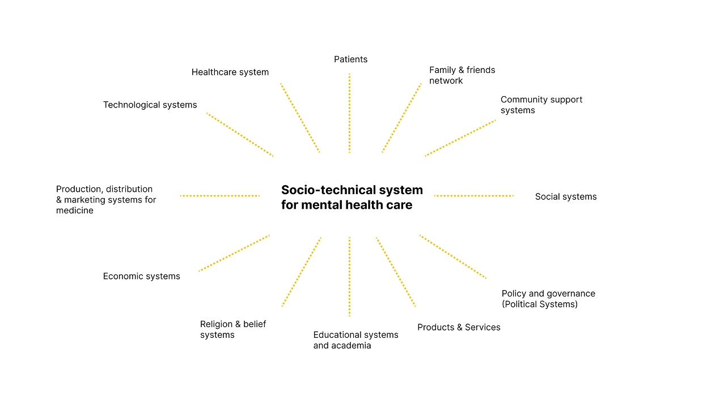
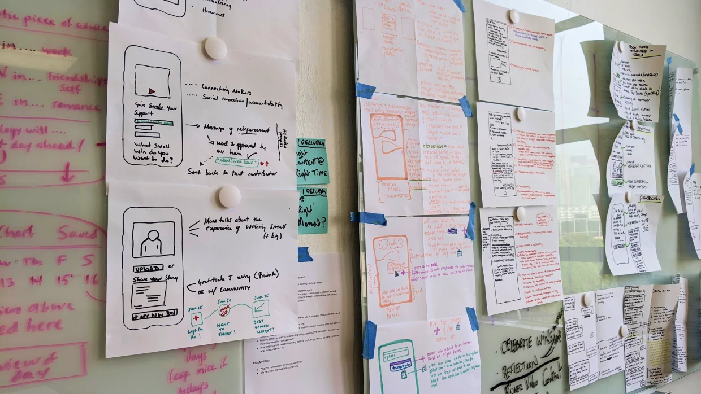
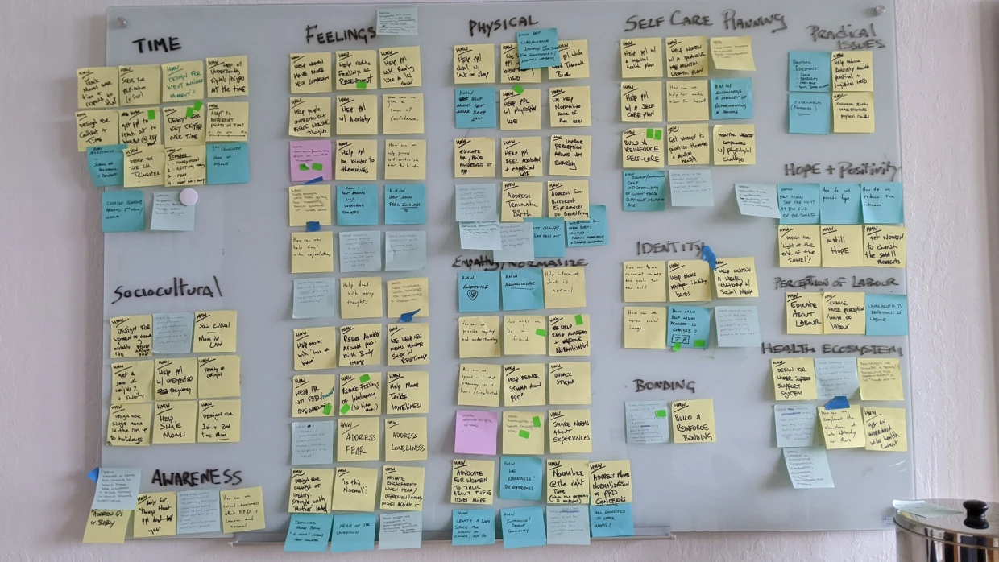
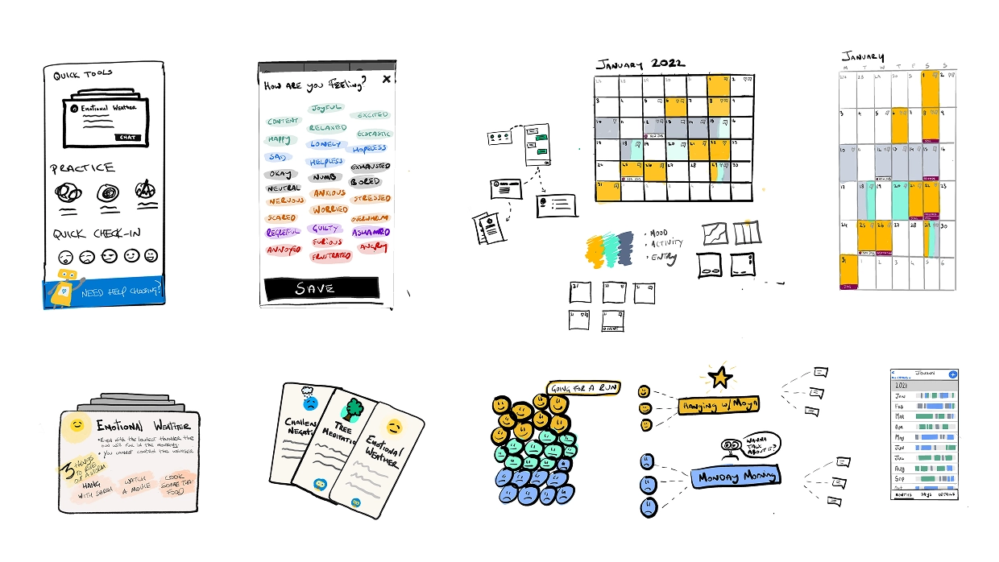
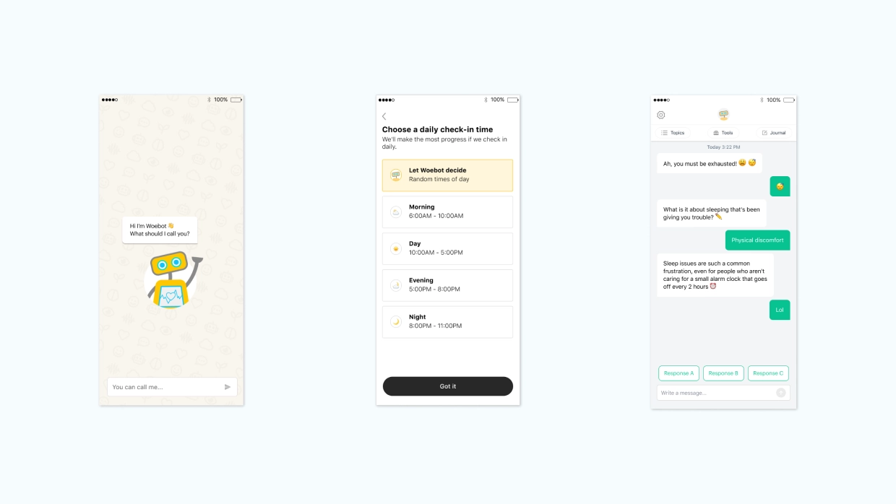
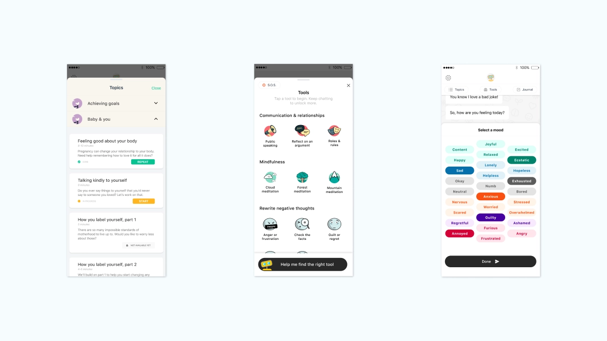

Woebot Health • Director of Design
Designing support to help women deal with postpartum depression

Woebot Health is a digital therapeutics company building clinically validated mental health interventions. During my time there, a key focus was shaping a new product area focused on postpartum depression, a complex and sensitive space where clinical rigor, user experience, and emotional nuance all needed to align.
Postpartum depression presents a uniquely challenging design problem. Support must be clinically effective, yet fit into the fragmented, low energy reality of life with a newborn. Existing approaches often failed to bridge this gap, delivering content but not sustained engagement or meaningful real world impact.
The ambition was to create a structured therapeutic programme capable of delivering measurable clinical outcomes, not just engagement. This work contributed to a product that later received FDA Breakthrough Device Designation and demonstrated clinically significant reductions in depression symptoms in RCTs, with 70%+ of participants showing meaningful improvement.

I was brought in to define the product from the ground up, working at the intersection of clinical science, product strategy, and service design.
From the outset, I framed the challenge as a service design problem within a broader socio technical system. Postpartum depression does not exist in isolation. It is shaped by healthcare pathways, support networks, and the realities of daily life with a newborn. Designing effectively meant understanding and responding to this wider system, not just the interface.

A key early step was leading two intensive, week long workshops in San Francisco with clinical psychologists, researchers, and product stakeholders. These sessions focused on translating evidence based therapy models into a digital format, not by replicating therapy sessions, but by rethinking how therapeutic principles could be delivered through small, repeatable interactions embedded in everyday life.


User research was central throughout. We conducted in depth interviews with mothers experiencing postpartum depression, exploring not just symptoms but context, including fatigue, guilt, isolation, and lack of time. This work surfaced a critical insight: the core challenge was not access to therapy content, but sustaining engagement and continuity in a low energy, high friction environment.
This reframed the product direction. Rather than a content driven experience, we designed a guided therapeutic journey, structured into progressive stages with clear intent and pacing, but flexible enough to adapt to unpredictable routines.
From this foundation, I worked closely with clinical psychologists and content designers to design, test, and build a suite of CBT based, in the moment tools, including mood tracking, reflective exercises, and adaptive conversational interventions. A strong emphasis was placed on conversation design, shaping tone, timing, and responsiveness to ensure interactions felt supportive, context aware, and clinically grounded.
The resulting service model combined short, conversational interactions with ongoing check ins, adapting over time based on user input. The emphasis was on emotional attunement, continuity, and low cognitive load, enabling the product to fit into moments of availability rather than demanding attention.

Alongside shaping the service and experience, I worked cross functionally to prototype and iterate, aligning clinical, research, design, and engineering perspectives. This included defining interaction patterns, structuring therapeutic flows, and ensuring the experience maintained both usability and clinical integrity across iOS and Android.
Within a relatively short timeframe, this work translated into a shipped product, forming the foundation of Woebot’s postpartum programme and supporting its evolution from a chatbot into a structured digital therapeutic platform.


Outcomes
- FDA Breakthrough Device Designation for a postpartum depression therapeutic
- RCT demonstrated clinically significant symptom reduction vs control
- 70%+ clinically meaningful improvement rate, ~2× control group
- Onset of impact within 2 weeks, sustained over programme duration
- Sustained engagement ~5 sessions per week in a low attention, high stress context
- Strong safety profile with no adverse events reported
- Established a repeatable model for translating clinical interventions into scalable digital products